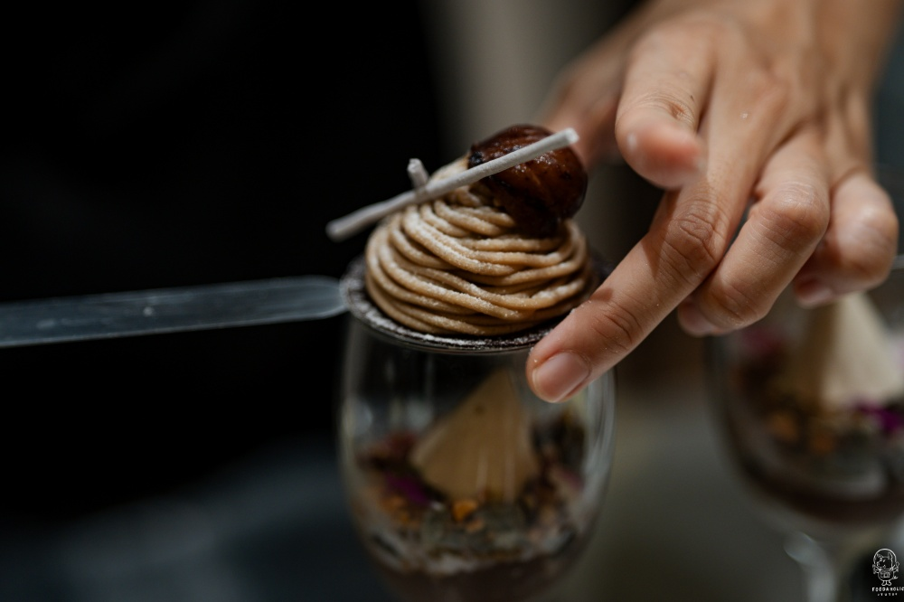
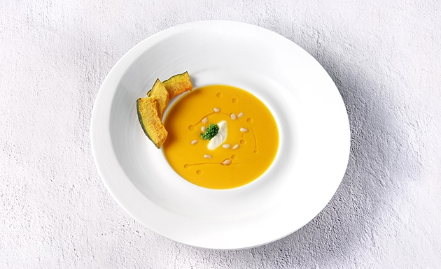
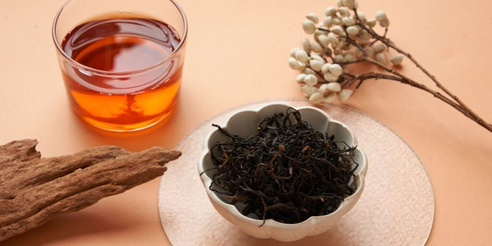

胡麻秋葵與蜜漬栗子
選用秋季剛採收的香甜栗子，以慢火蜜漬至質地鬆軟，搭配爽口的秋葵並淋上濃郁的手作胡麻醬，風味溫潤開胃。

栗子南瓜濃湯
將整顆日本栗子南瓜帶皮烘烤出焦糖香氣，與細細研磨的栗子一同熬煮。無添加人工調味，滿是秋日作物的天然甘甜。

炙燒M9和牛佐牛蒡酥
澳洲M9和牛以炭火炙燒鎖住豐腴肉汁，搭配慢炸至金黃酥脆的在地牛蒡絲。一濃郁、一清脆，在舌尖交織出秋日的醇厚。

手作柿子奶酪佐桂花蜜香紅茶
醇厚鮮奶奶酪鋪上鮮甜的當季熟成柿子純醬，果香馥郁。搭配一杯飄著淡淡桂花香的溫熱紅茶，暖心而優雅。